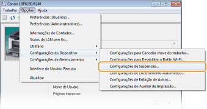
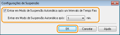

0KU8-00L
A função do modo de suspensão reduz a quantidade de energia consumida pela impressora, interrompendo temporariamente algumas das operações internas. Você pode configurar a impressora para entrar em modo de suspensão automaticamente quando ela permanecer ociosa por determinado intervalo de tempo. A configuração padrão de fábrica de quantidade de tempo decorrido antes de a impressora entrar e modo de suspensão é de 1 minuto. Recomendamos usar a configuração padrão de fábrica para economizar o máximo de energia. Se quiser alterar o tempo decorrido antes de a impressora entrar em modo de suspensão, siga o procedimento abaixo na Janela de Status da Impressora.
|
|
|
As situações nas quais a impressora não entra em modo de suspensão
A impressora não entra em modo de suspensão enquanto está recebendo dados de impressão de um computador, se uma tampa estiver, se não houver um cartucho de toner instalado e em algumas outras situações.
Dependendo do local de uso, a impressora pode não entrar no modo de suspensão se estiver conectada a uma LAN sem fio.
|
1
Selecione a impressora clicando  na bandeja do sistema.
na bandeja do sistema.
na bandeja do sistema.
2
Selecione [Opções]  [Configurações do Dispositivo] [Configurações de Suspensão].
[Configurações do Dispositivo] [Configurações de Suspensão].

3
Faça as configurações do modo de suspensão e clique em [OK].

[Entrar em Modo de Suspensão Automática após um Intervalo de Tempo Fixo]
Marque esta caixa de seleção para entrar em modo de suspensão após determinado período com [Entrar em Modo de Suspensão Automaticamente após].
Marque esta caixa de seleção para entrar em modo de suspensão após determinado período com [Entrar em Modo de Suspensão Automaticamente após].
[Entrar em Modo de Suspensão Automaticamente após]
Especifica o tempo depois do qual a impressora entra em modo de suspensão. Você pode selecionar de 1 a 180 minutos.
Especifica o tempo depois do qual a impressora entra em modo de suspensão. Você pode selecionar de 1 a 180 minutos.